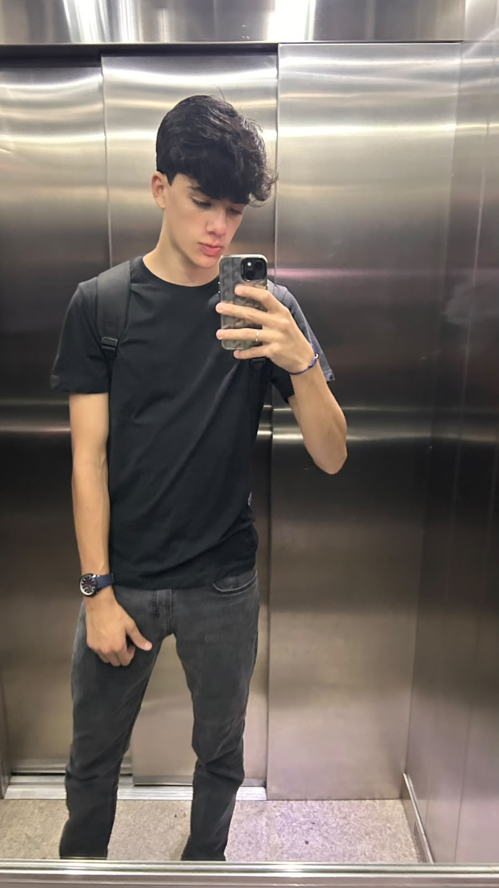
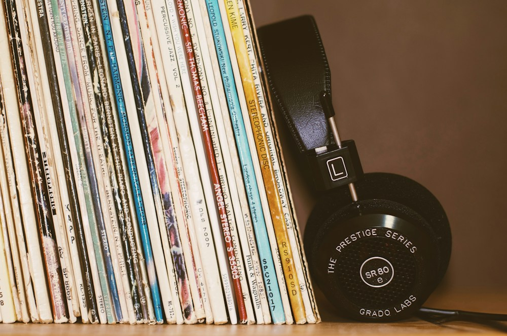
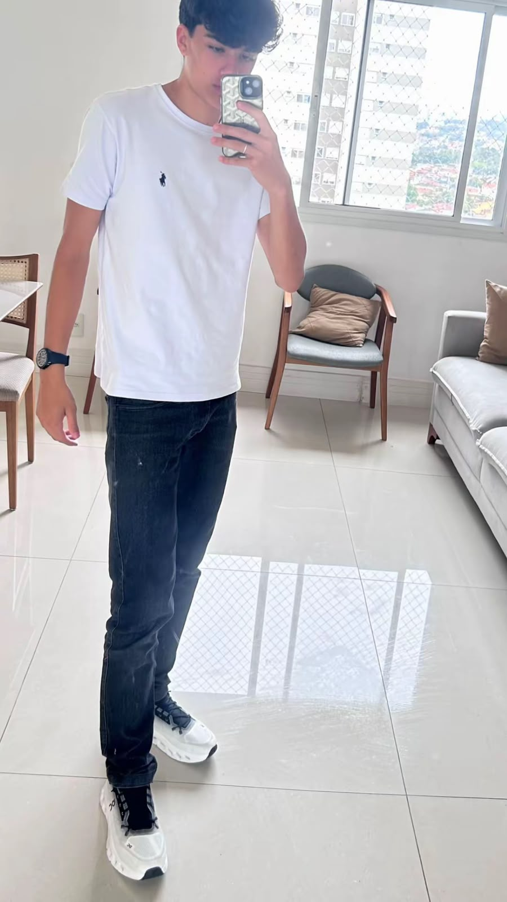
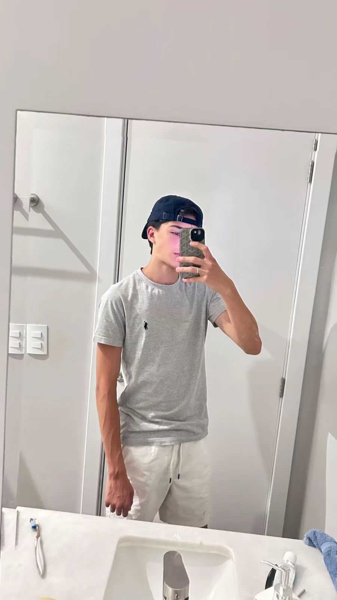
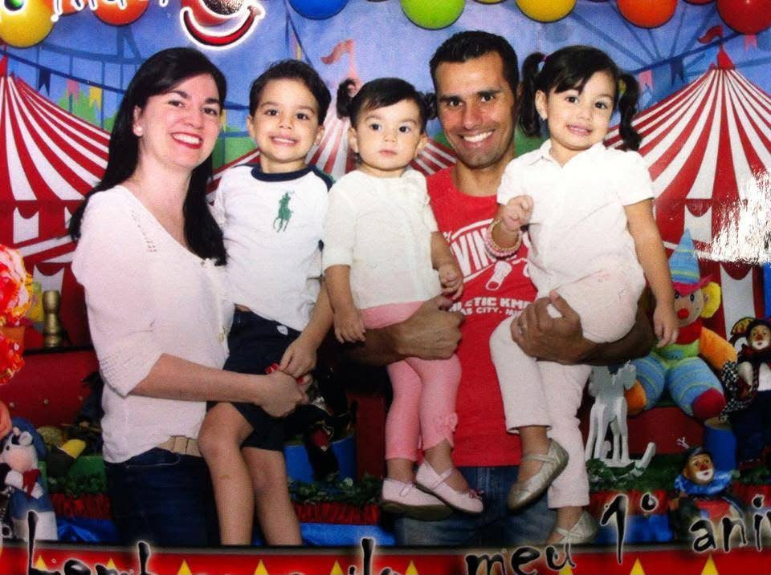
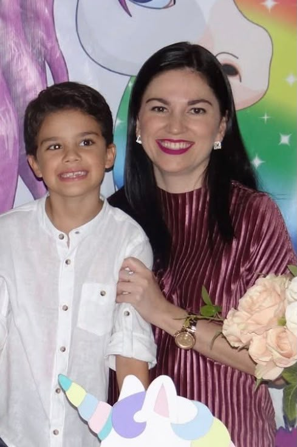
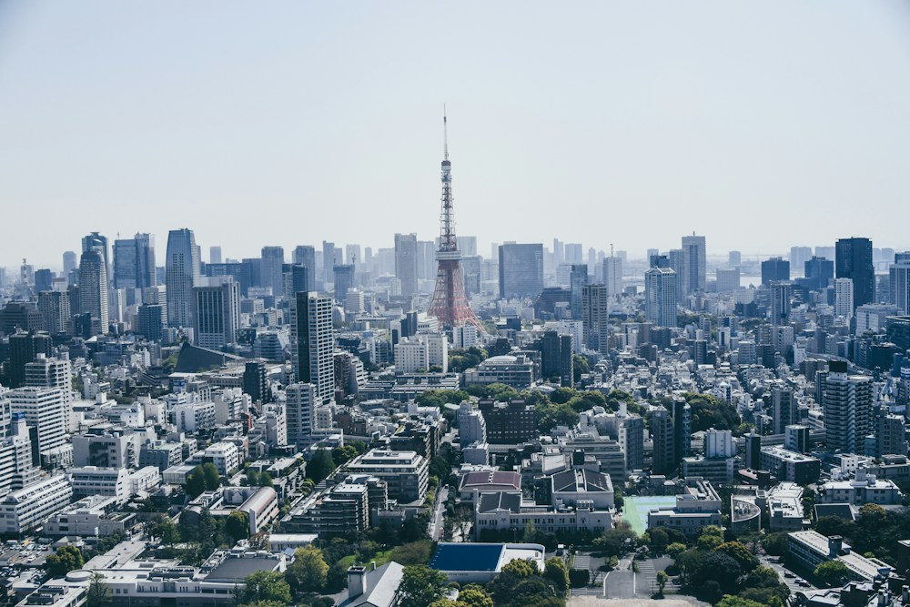
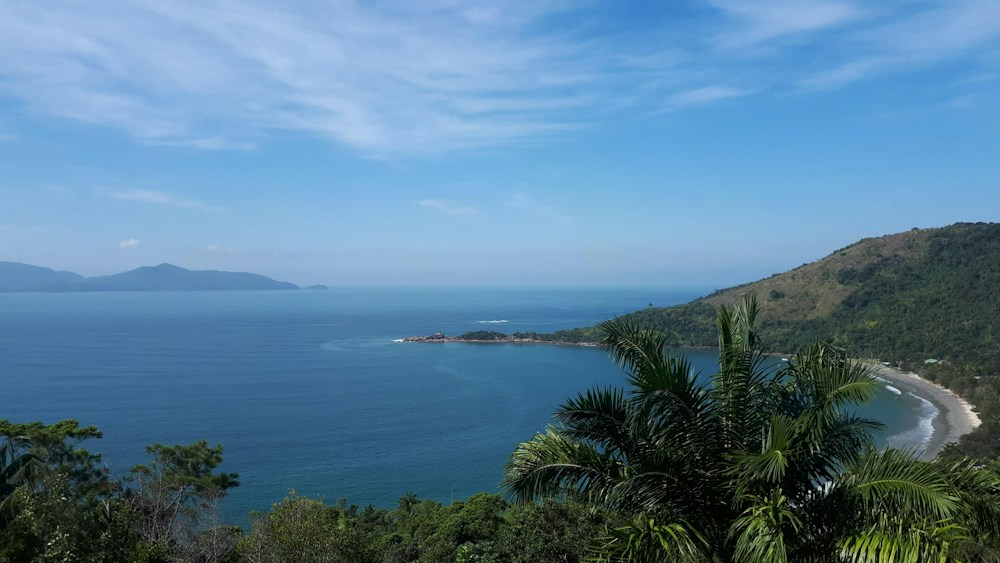
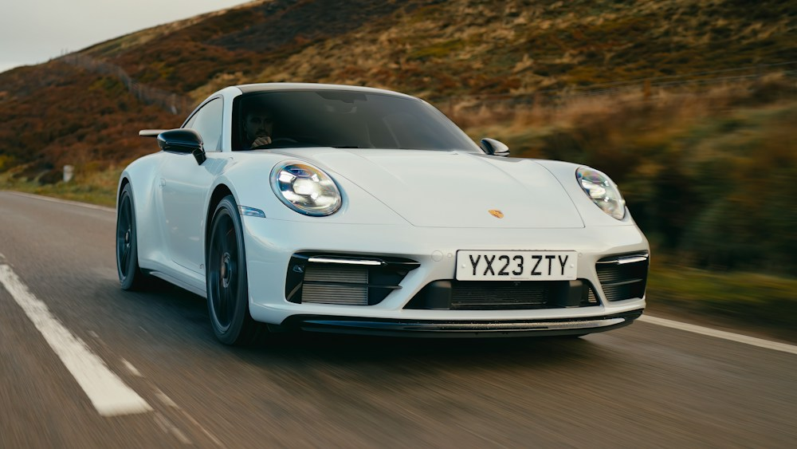

Tecnologia
Gosto de criar sites e descobrir como as coisas funcionam. Ver uma ideia ganhando forma na tela é muito legal.
MINHA PÁGINA PESSOAL
Meu nome é Lucas Gonçalves Tartarini, tenho 16 anos e moro em Osasco, São Paulo. Sou estudante do Ensino Médio e gosto muito de tecnologia, de aprender coisas novas e de passar tempo com as pessoas que fazem parte da minha vida.
Curto criar páginas com HTML e CSS, jogar, ouvir música e aproveitar os momentos com a minha família e meus amigos. Esta página reúne um pouco de quem eu sou e das coisas de que eu gosto.
Conheça minha família
Gosto de criar sites e descobrir como as coisas funcionam. Ver uma ideia ganhando forma na tela é muito legal.

Sempre tem uma música para acompanhar o momento, seja para relaxar, estudar ou aproveitar o tempo livre.
Gosto de jogos eletrônicos, principalmente quando posso jogar com os amigos e dar boas risadas.


PESSOAS IMPORTANTES
Minha família faz parte das minhas melhores lembranças. São as pessoas que estão comigo, me apoiam e tornam os momentos mais especiais.

Uma lembrança da minha infância ao lado da minha família. Gosto de guardar fotos como esta, que fazem a gente lembrar de tantos momentos bons.

Minha mãe é uma pessoa muito importante para mim. Sou grato pelo carinho, pelo apoio e por estar presente em cada fase da minha vida.
LUGARES E NOVAS EXPERIÊNCIAS
Conhecer lugares diferentes é uma forma de sair da rotina, criar memórias e descobrir coisas novas.

JAPÃO
Tenho vontade de conhecer a cultura japonesa, experimentar comidas diferentes e ver de perto a tecnologia e as ruas de Tóquio.
Veja Tóquio no mapaESTADOS UNIDOS
Quero conhecer a Times Square, passear pelo Central Park e ver os prédios e lugares que aparecem em tantos filmes.
Veja Nova York no mapaRIO DE JANEIRO
Uma viagem com praia, paisagens bonitas e passeios que renderam boas lembranças.
Veja o Rio de Janeiro no mapa
LITORAL DE SÃO PAULO
Um lugar para aproveitar o mar, descansar e passar um tempo com a família.
Veja Ubatuba no mapaCOISAS DE QUE EU GOSTO
Algumas escolhas que combinam comigo e fazem parte dos meus gostos.

MEU CARRO DOS SONHOS
Gosto do visual e do estilo esportivo. É um carro que eu gostaria de ter um dia.
Conheça o Porsche 911UM JOGO FAVORITO
A mistura de futebol com carros deixa as partidas divertidas, ainda mais jogando com os amigos.
Conheça o jogoMINHA TRILHA SONORA
São estilos que gosto de ouvir no dia a dia. Minha playlist muda de acordo com o momento.
Encontre músicas no Spotify